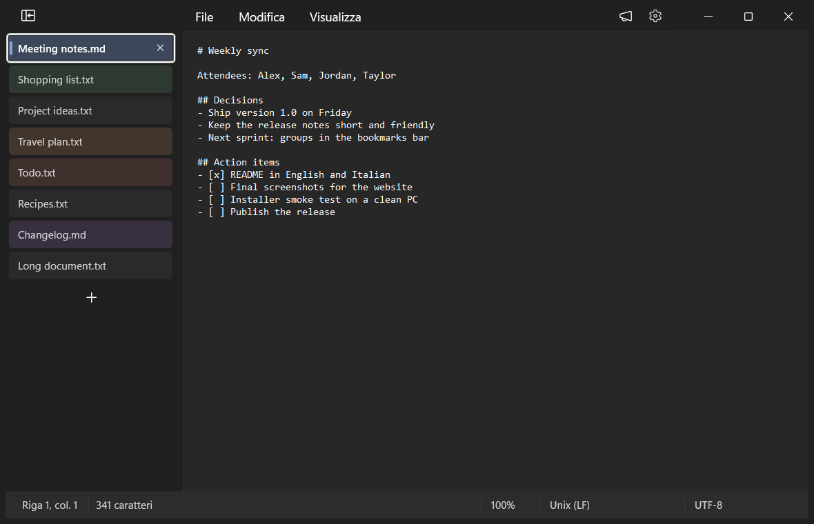
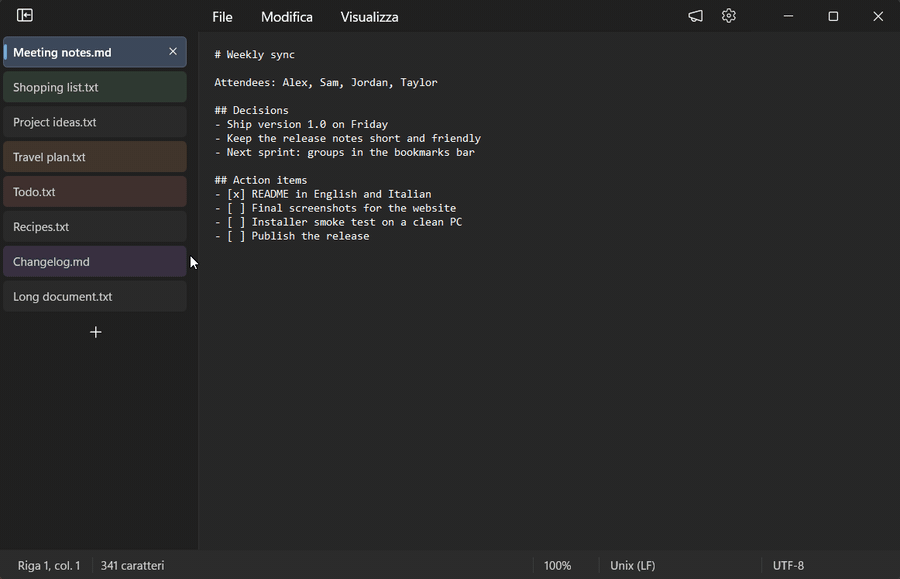
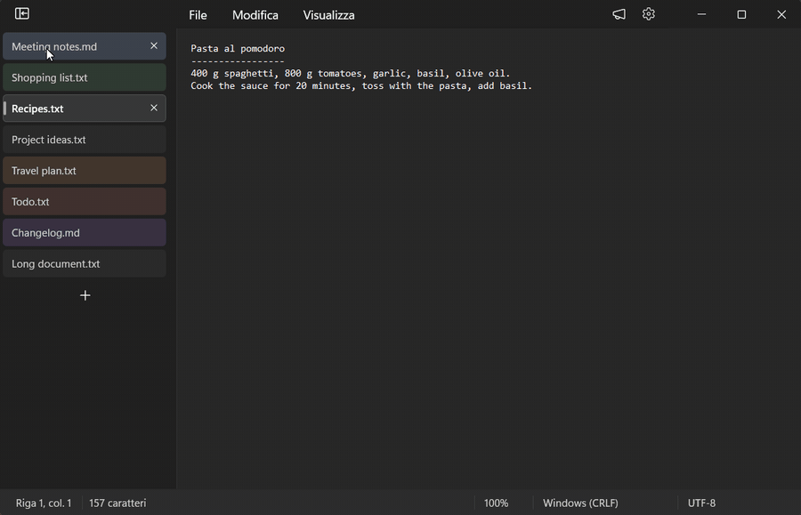
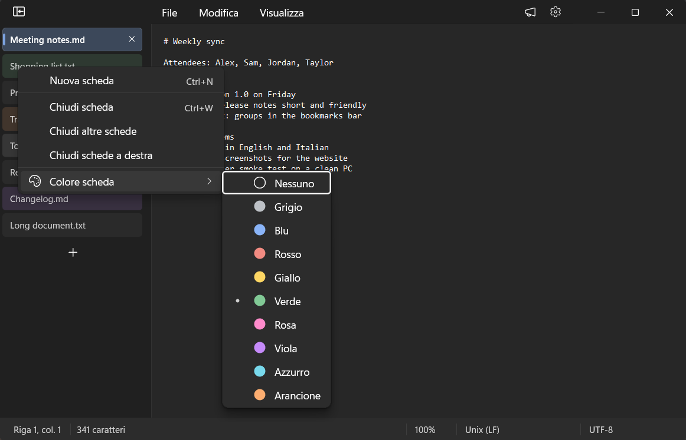
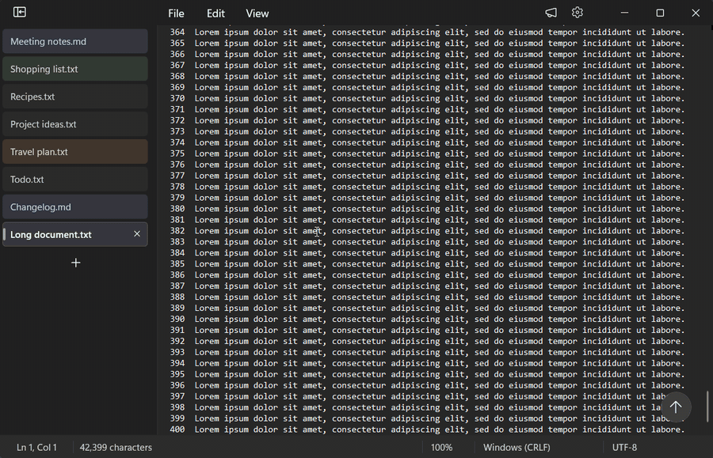
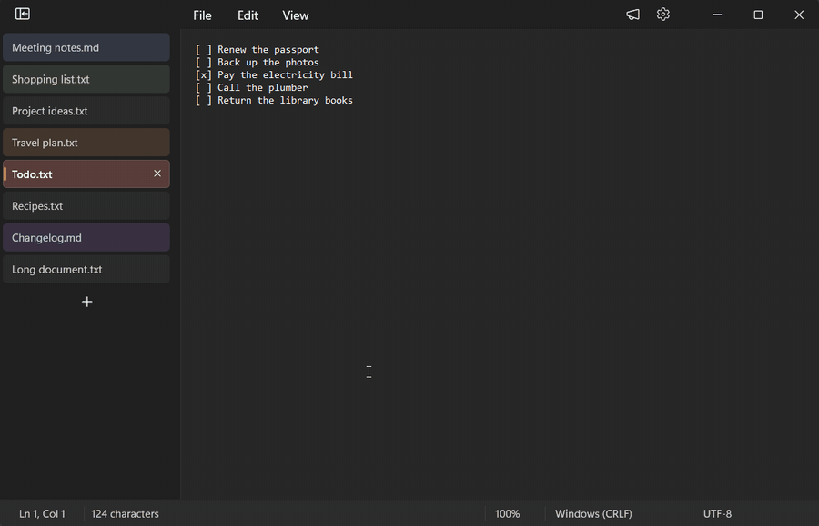
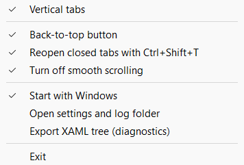

Vertical Tabs for Notepad
Your Notepad tabs in a column on the left, like the vertical tabs in Chrome and Edge. With tab colors, a back-to-top button and Ctrl+Shift+T to reopen closed tabs.
Le schede del Blocco note in una colonna a sinistra, come le schede verticali di Chrome ed Edge. Con i colori delle schede, un pulsante "Torna su" e Ctrl+Maiusc+T per riaprire le schede chiuse.
Free and open source, MIT license. Windows 11, 64-bit. Version 1.3.0.
Gratis e open source, licenza MIT. Windows 11 a 64 bit. Versione 1.3.0.

Vertical tabsSchede verticali
The tabs move into a column that starts at the top of the window. The empty title row is hidden, and the menu bar moves up next to the window buttons. Under the hood they are still Notepad's own tabs, so saving, closing and session restore work as usual.
Le schede si spostano in una colonna che parte dalla cima della finestra. La riga del titolo, rimasta vuota, si nasconde, e la barra dei menu sale accanto ai pulsanti della finestra. Sotto restano le schede del Blocco note, quindi salvataggio, chiusura e ripristino della sessione funzionano come sempre.
- Click to switch, middle-click or × to close, + for a new tab.
- Drag a tab to reorder it: Notepad's real tabs move too.
- Right-click for Notepad's own tab menu, plus Tab color.
- Collapse the column to icons, or drag its edge to resize it. Width and state apply to every window.
- Same font and colors as Notepad's tabs, on the Mica background, in the light and the dark theme.
- Clic per cambiare scheda, clic centrale o × per chiudere, + per una scheda nuova.
- Trascina una scheda per spostarla: si spostano anche le schede vere del Blocco note.
- Clic destro per il menu della scheda del Blocco note, più Colore scheda.
- Comprimi la colonna in sole icone, o trascinane il bordo per allargarla. Larghezza e stato valgono per tutte le finestre.
- Lo stesso carattere e gli stessi colori delle schede del Blocco note, sullo sfondo Mica, nel tema chiaro e scuro.


Tab colorsColori delle schede
Right-click a tab and pick a color: grey, blue, red, yellow, green, pink, purple, cyan or orange, the colors of Chrome's tab groups. The row gets a light tint, and the active tab a colored bar. Colors are saved and come back after Notepad restarts. The tabs on the left of this page use them too.
Clic destro su una scheda e scegli un colore: grigio, blu, rosso, giallo, verde, rosa, viola, azzurro o arancione, i colori dei gruppi di schede di Chrome. La riga prende una tinta leggera e la scheda attiva una barretta colorata. I colori si salvano e tornano dopo il riavvio del Blocco note. Li usano anche le schede a sinistra di questa pagina.

Back to topTorna su
Scroll down a document and a round button fades in at the bottom right of the editor. One click brings you back to the top, and the keyboard goes back to the text. Each tab keeps its own position.
Scorri un documento verso il basso e in basso a destra nell'editor compare sfumando un pulsante tondo. Un clic ti riporta all'inizio, e la tastiera torna al testo. Ogni scheda tiene la sua posizione.

Reopen closed tabsRiapri le schede chiuse
Closed a tab by mistake? Press Ctrl+Shift+T: it comes back in its place, with its color, and becomes the active tab. Press again to go further back, up to the last 25 tabs. Like in Chrome, the history survives closing the window or Notepad.
Hai chiuso una scheda per sbaglio? Premi Ctrl+Maiusc+T: torna al suo posto, con il suo colore, e diventa quella attiva. Premendo di nuovo vai a ritroso, fino alle ultime 25 schede. Come in Chrome, la cronologia resta anche chiudendo la finestra o il Blocco note.
It works for saved files: only the path, the position and the color of each tab are stored, never the content. The shortcut is taken only while a Notepad window is active, so your browser keeps it.
Vale per i file salvati: di ogni scheda si ricordano solo il percorso, la posizione e il colore, mai il contenuto. La scorciatoia si prende solo mentre è attiva una finestra del Blocco note, quindi il browser la tiene.

ScrollingScorrimento
- No smooth scrolling. The mouse wheel moves the text right away, line by line. On by default, and you can turn it off.
- Scrollbars expand as soon as you hover them, without the usual short delay.
- Two Notepad scrollbar glitches fixed: a vertical scrollbar shown when the text fits, and scroll ranges that stay outdated until the first scroll.
- Niente scorrimento fluido. La rotella del mouse sposta il testo subito, riga per riga. Attivo all'inizio, e si può spegnere.
- Le barre di scorrimento si allargano appena ci passi sopra, senza il solito breve ritardo.
- Due difetti delle barre di scorrimento del Blocco note corretti: una barra verticale che compare anche quando il testo ci sta, e intervalli di scorrimento che restano vecchi fino al primo scorrimento.
InstallInstallazione
- Download
VTabsNotepad-1.3.0-setup.exefrom the latest release. - Run it. No administrator rights needed: it installs for your user only, in English or Italian.
- Open Notepad. The app runs in the notification area and adds the vertical tabs, also to the windows that are already open.
- Scarica
VTabsNotepad-1.3.0-setup.exedall'ultima release. - Avvialo. Non servono diritti di amministratore: si installa solo per il tuo utente, in italiano o in inglese.
- Apri il Blocco note. L'app resta nell'area di notifica e aggiunge le schede verticali, anche alle finestre già aperte.
The installer isn't code-signed, so SmartScreen may say "Windows protected your PC": choose More info › Run anyway. The app loads a module into Notepad, which some security software flags. The source code is public, and you can build it yourself.
L'installer non ha una firma digitale, quindi SmartScreen può dire "PC protetto da Windows": scegli Ulteriori informazioni › Esegui comunque. L'app carica un modulo dentro il Blocco note, e qualche antivirus lo segnala. Il codice sorgente è pubblico, e puoi compilarlo da te.
RequirementsRequisiti
- Windows 11, 64-bit.
- The Notepad with tabs, from the Microsoft Store.
- Tested on Windows 11 26H2 (build 26300) with Notepad 11.2607. A Notepad update can break a feature: if that happens, turn it off from the tray menu.
- Windows 11 a 64 bit.
- Il Blocco note con le schede, dal Microsoft Store.
- Provato su Windows 11 26H2 (build 26300) con il Blocco note 11.2607. Un aggiornamento del Blocco note può rompere una funzione: in quel caso spegnila dal menu della tray.
OptionsOpzioni
Right-click the icon in the notification area:
Clic destro sull'icona nell'area di notifica. Con Windows in italiano le voci sono queste; nell'immagine, Windows è in inglese.

| Menu item | Default |
|---|---|
| Vertical tabs | On |
| Back-to-top button | On |
| Reopen closed tabs with Ctrl+Shift+T | On |
| Turn off smooth scrolling | On |
| Start with Windows | Chosen in the setup |
| Open settings and log folder | |
| Export XAML tree (diagnostics) | For bug reports |
| Exit |
| Voce del menu | Predefinito |
|---|---|
| Schede verticali | Attiva |
| Pulsante «Torna su» | Attiva |
| Riapri la scheda chiusa con Ctrl+Maiusc+T | Attiva |
| Disattiva lo scorrimento fluido | Attiva |
| Avvia con Windows | Come scelto nell'installazione |
| Apri cartella impostazioni e log | |
| Esporta albero XAML (diagnostica) | |
| Esci |
Privacy
- The app works offline: no network access, no telemetry, no account.
- It never reads or stores what you write.
- It keeps a few small files in
%LOCALAPPDATA%\VTabsNotepad: the options, the tab colors, the paths of the last 25 closed tabs and a diagnostic log. The log can contain file names: have a look before sharing it.
- L'app funziona offline: niente rete, niente telemetria, nessun account.
- Non legge e non salva mai quello che scrivi.
- Tiene pochi file piccoli in
%LOCALAPPDATA%\VTabsNotepad: le opzioni, i colori delle schede, i percorsi delle ultime 25 schede chiuse e un registro diagnostico. Il registro può contenere nomi di file: controllalo prima di condividerlo.
QuestionsDomande
Does it change Notepad?
No. Nothing changes on disk: while the app runs, it loads a module into Notepad. Exit the app or uninstall it, and the module leaves the open Notepad windows right away: they go back to Notepad's own tabs, and nothing of the app stays inside Notepad.
Why do Windows or my antivirus warn me?
The installer isn't signed yet, and loading a module into another app is something security tools watch closely. The code is open: you can read it and build it yourself.
Notepad updated and something looks wrong.
Notepad's interface can change with an update. Turn the feature off from the tray menu, and open an issue with your Notepad version (in Notepad: Settings › About this app).
Which languages does the app speak?
English and Italian. The app follows the Windows display language: Italian if Windows is in Italian, English for every other language. The installer and this website do the same.
Does it work on Windows 10?
No. It needs the Notepad with tabs of Windows 11.
How do I uninstall it?
Settings › Apps › Installed apps › Vertical Tabs for Notepad › Uninstall. The uninstaller closes the app, so open Notepad windows go back to the normal tabs right away, and asks whether to delete your settings too.
Modifica il Blocco note?
No. Su disco non cambia niente: mentre l'app è aperta, carica un modulo dentro il Blocco note. Chiudi l'app o disinstallala, e il modulo esce subito dalle finestre del Blocco note aperte: tornano alle sue schede normali, e nel Blocco note non resta niente dell'app.
Perché Windows o l'antivirus mi avvisano?
L'installer non ha ancora una firma digitale, e caricare un modulo dentro un'altra app è una cosa che i programmi di sicurezza tengono d'occhio. Il codice è aperto: puoi leggerlo e compilarlo da te.
Il Blocco note si è aggiornato e qualcosa non va.
Un aggiornamento può cambiare l'interfaccia del Blocco note. Spegni la funzione dal menu della tray e apri una segnalazione con la versione del Blocco note (nel Blocco note: Impostazioni › Informazioni su questa app).
In che lingua è l'app?
In italiano e in inglese. L'app segue la lingua di visualizzazione di Windows: italiano se Windows è in italiano, inglese per tutte le altre lingue. Lo stesso vale per l'installazione e per questo sito.
Funziona su Windows 10?
No. Serve il Blocco note con le schede di Windows 11.
Come si disinstalla?
Impostazioni › App › App installate › Vertical Tabs for Notepad › Disinstalla. La disinstallazione chiude l'app, quindi le finestre del Blocco note aperte tornano subito alle schede normali, e chiede se eliminare anche le impostazioni.